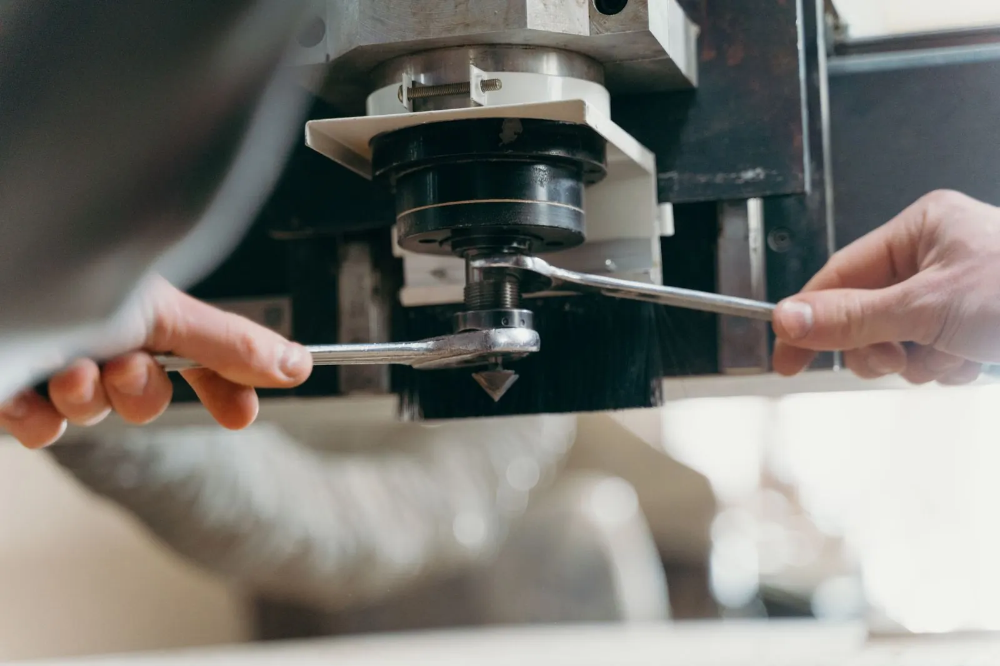

Quality & factory
Rigorous quality, from raw material to handover.
We subject every raw material to a rigorous quality control mandate before it reaches your home.
- 100+point quality check
- 2×material testing
- 16checks in the Interior Guide
- 10 yearswarranty
Quality at Homworks
Homworks tests every material twice – on arrival at the factory and again when it is issued to a project – in an in-house testing lab, and runs a 100+ point quality check before handover.
Core boards are ISI-certified BWP / HDHMR E0, edges are PUR hot-melt banded, and hardware, joints, finishes and load are tested.
- 72 hrsboiling-water test on every BWP-grade plywood
- E0grade core boards, with no formaldehyde
- 80° Cheat the PUR edge-banding withstands
- 18 mmgap kept between the wall and the carcass
The 16 checks
What can go wrong, and how we prevent it.
Each point from the Homworks Interior Guide, with the standard we hold ourselves to.
Common industry practice uses a mix of board types (BWR, MR, MDF, particle board, paper-foil board) and the grade is often not stated.
ISI-certified BWP / HDHMR E0 double-side post-laminated boards are used as the core material in every carcass.
Boards that are not water-tested can swell and weaken over time.
Every BWP-grade plywood is tested in boiling water for 72 hours, with results recorded before it is used in projects.
Boards differ in what they release into the room, and many vendors do not say which grade they use.
Core boards are E0 grade, with no formaldehyde, in all carcasses.
Many vendors give no clarity on which tests were done or what the results were.
ISI-certified boards, and an in-house material testing lab at our factory. Each material is tested twice: when it reaches the factory and when it is issued to a project. We can provide tested samples of the core materials.
Conventional EVA glue applied by hand on ordinary machines may not give the same water resistance and bond strength.
Edge-banding on advanced IMA machines with PUR hot-melt glue. “Peel-off” tests every 2 hours on the lines, with edge strength above 7 Newtons.
Poor bonding can lead to laminate lifting, bubbling, or edges coming loose.
Henkel D3 adhesive for laminate pressing, and PUR hot-melt glue for machine edge-banding and specified lamination – ideal for high-temperature environments like kitchens, withstanding up to 80° C.
Materials and accessories are often not tested.
A drawer and shutter cycle test for the durability of runners and hinges, and a compression test for the strength of the board and the load-bearing capacity of the dowel.
Many major players use a single-carcass system to reduce costs, which can compromise quality and the weight-bearing capacity of the kitchen top.
A double-carcass system on every project, so a single unit can be replaced easily without disturbing the other cabinets.
Many vendors give no information on scratch-resistance testing.
A scratch-resistance test on acrylics, laminates and foils. Acrylic is passed through the flat lamination line with PUR hot-melt glue, with an ABS backer of the same thickness and density on the back of the board.
Many vendors depend on facilities owned by others, and do most of the work on site, which disturbs the home and can compromise quality.
Our own manufacturing facility with CNC and flat-lamination machinery imported from Italy and Germany. Site carpentry is kept for fillers, end panels and visible panels.
Vendors often give no clarity on strength testing.
A vertical force test for the load-bearing capacity of a panel, and a leg-strength test to find the breaking point of the leg.
Most industry practice leaves no gap, so the carcass touches the wall and exposes plywood to moisture, reducing durability.
An 18mm gap between the wall and the carcass keeps the core materials away from wall dampness, so the product lasts longer.
A narrow range can limit your design.
Lamination, membrane, acrylic and PU paint, in a wide range of designs, colours and finishing options for every room in your home.
Standard sizes can leave gaps and awkward corners.
Furniture is designed around your room dimensions, storage needs and chosen finishes, with the design and measurements confirmed before production.
Most vendors quote a square-foot price, which offers no clarity on the cost of materials and accessories and can lead to higher prices during completion.
Module-wise pricing, so the quotation is as close as possible to the final cost.
Without a defined check, faults can reach site.
Every project goes through our quality checks before handover, backed by our in-house testing lab and 10-year warranty.

Tested twice. Checked 100+ times.
In an in-house testing lab at our factory.
Certified
Certificates and test records.
A claim about quality is only as good as the record behind it.
 BIS ISI MARKLicences IS 17634 & IS 17635
BIS ISI MARKLicences IS 17634 & IS 17635- ISO 9001:2015Quality Management · GICG
- ISO 14001:2015Environmental Management · GICG
- ISO 45001:2018Health & Safety · GICG
- REHAUISO 9001 & 14001 certified edge band
 TÜV RHEINLANDRoHS test report: PASS
TÜV RHEINLANDRoHS test report: PASS TECHNOMELT PURHenkel hot-melt adhesives
TECHNOMELT PURHenkel hot-melt adhesives- FASTO REDISILSilicone sealants
In short
The whole page, at a glance.
Everything you have just read, in one place. Tap any card to jump back to it.
See the standard for yourself.
Call for a free design, and ask for a tested sample of the core materials.